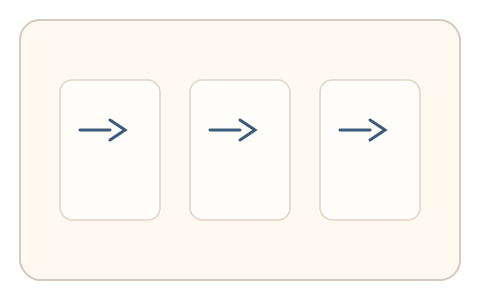
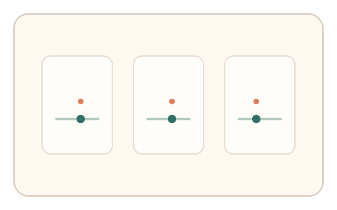
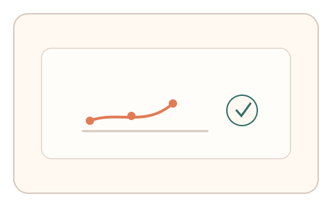

#87
Morphological Analysis - Combination Batches
已扩展
错觉序列签名
连续呈现 3 个错觉校准任务，利用偏差量序列形态与一致性验证真实性。
概念原文
连续呈现 3 个错觉校准任务，记录偏差量序列并与群体基线比对。任务结构为短序列，信号形态为错觉偏差量。
用“偏差序列形态”替代单点判定。
研究背景
单点错觉偏差容易被模仿，但连续序列的偏差曲线具有更稳定的个体与群体特征。通过短序列比较可提高对脚本的辨识度。
核心机制
- 连续呈现 3 个不同错觉校准任务。
- 用户依次调整到主观正确状态。
- 记录偏差量序列与变化趋势。
- 与群体基线分布进行比较。
用户流程
- 步骤 1：用户完成第 1 个错觉校准。
- 步骤 2：连续完成第 2、3 个校准。
- 步骤 3：系统记录偏差序列并判定。
判定信号
偏差量序列形态
真实用户的偏差序列具有稳定趋势。
序列内一致性
真实用户在短序列中的变化范围有限。
判定逻辑
偏差序列需落在人类分布区间并保持一致性；随机或过度一致判异常。
对抗面
- 脚本直接计算并输出固定偏差序列
- 重放真实用户的偏差序列
防御与缓解
- 随机化错觉类型与顺序
- 动态扰动校准起点与参数
- 叠加反应时与微调信号进行多信号判定
可达性与风险
提供更低负担的错觉类型或替代任务，避免对视觉敏感用户造成压力。
- 连续任务可能增加疲劳
- 显示设备差异影响偏差量
可视化状态

状态 1：错觉序列
连续呈现多个错觉校准任务。

状态 2：逐步校准
用户依次完成校准并微调。

状态 3：序列判定
根据偏差序列形态判定。
参考资料
Optical illusion
说明错觉偏差与感知规律。
Psychophysics
说明感知偏差的测量方法。